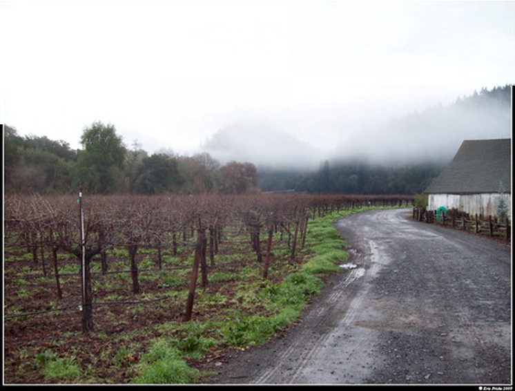
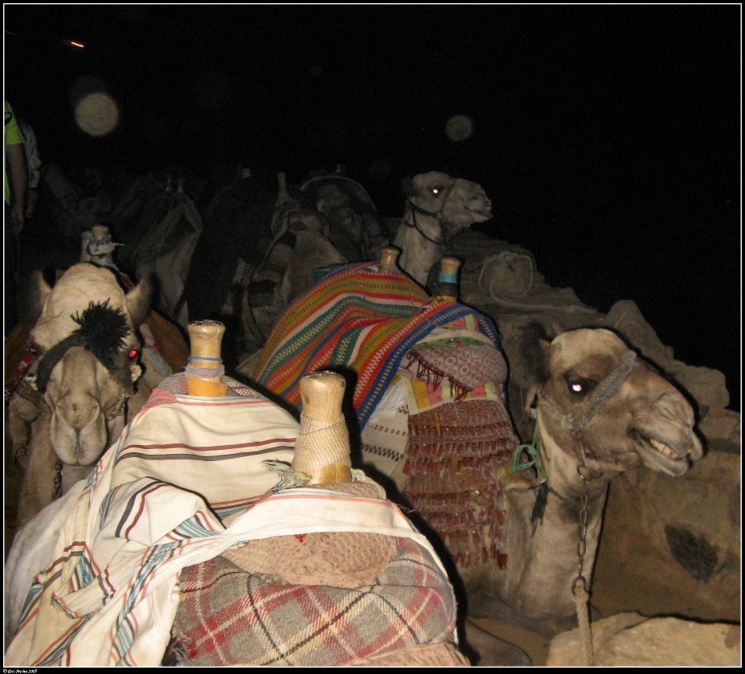
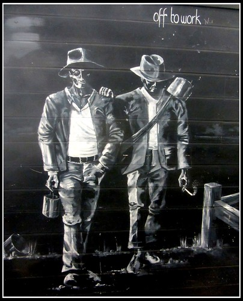
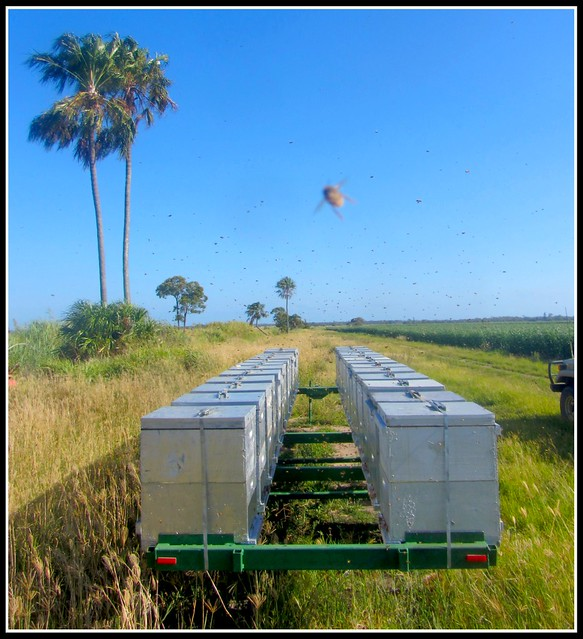
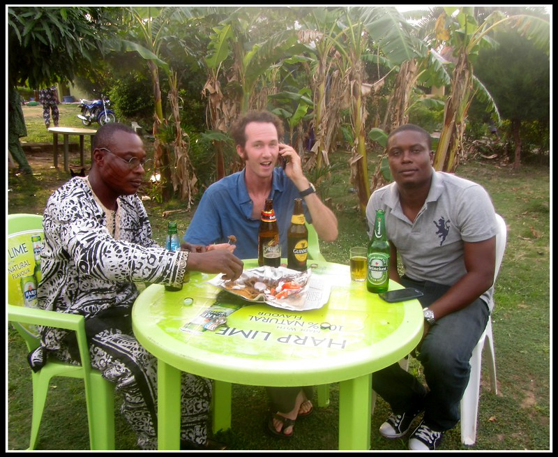
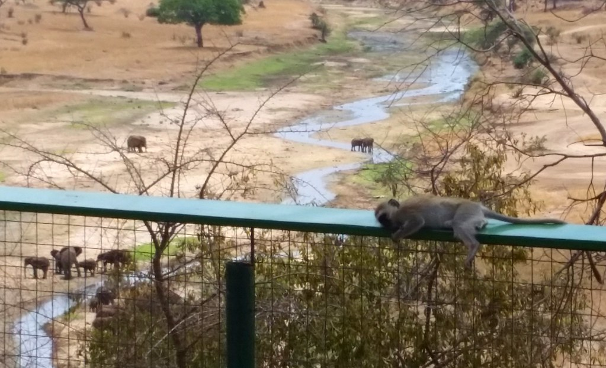
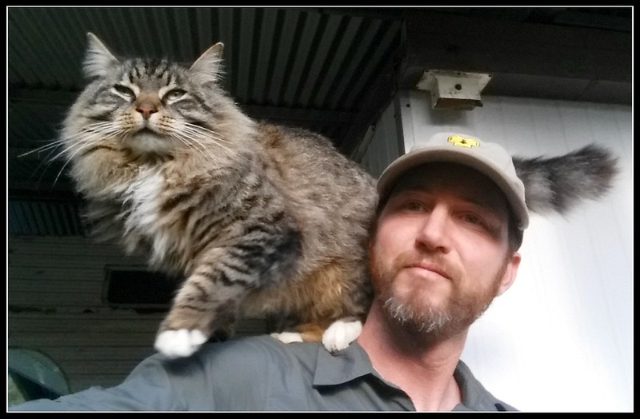
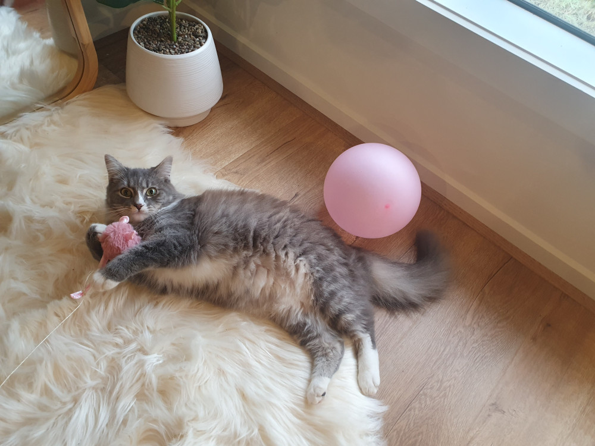

Twenty Years of LJ Idol
Text of the entry
Twenty Years of LJ Idol
Season V 2008-09-22 – Some people have been doing this LJ Idol thing for four years already, and among the 194 participants this year is one who introduces himself with
“I don’t believe in telling you who I am. I am more interested in who you decide I am after your own observation. In fact that fascinates me.” though does go on to say he’s a beekeeper hoping to work for the State Department (not as a beekeeper) or if that fails the Peace Corps. And in a rather prophetic aside about LJ Idol “what in the name of cthulhu is ‘the green room’?!”
The entries were often essays / opinion pieces with occasional works of fiction. By week three emo_snal was listed in Encyclopedia Dramatica as a sockpuppet (a fake identity) belonging to someone I’d never heard of, off to a great start!
Gradually insights into our protagonist’s life did begin to appear, however, such as moving truckloads of hives to the almonds on cold winter nights and getting 130+ bee stings in the process.
2008-12-26 - And then there was the “Green Room Holiday Party” I hosted not realizing that taking the green room’s name in vain is severe LJ Idol blasphemy and I almost got officially burned at the stake for my heretical ways.
And then anonymity was completely thrown to the wind when in New Years I drove up to northern California to hang out with fellow LJ Idolist gratefuladdict and several of her friends who were also in it. We either at that time or shortly thereafter commenced dating
“I should go” I say. I have a long drive ahead of me.
It’s one thirty. I still need three votes. I could post a link to the polls a second time, or post to emosnail for the first time, but I don’t. “I should go” I say
It’s two. I still need three votes. I could surely call three people I know with LJs who probably haven’t voted yet, but I don’t. “I should go”
It’s three. The polls should be closed, but I haven’t looked at them in an hour or so. “I should go” I say, and finally manage to make it out to my car.
I find my car a box full of rain. Apparently I forgot to close the skylight. Even after closing it, it is still raining in my car. The ceiling continues to drip. The seats, everything is soaked. I didn’t really want to leave today anyway. So I rejoin my favourite person I’ve met in LJ Idol on the couch. But of course, in another sense, I am indeed to leave today.
LJ Idol began with “saying goodbye,” but it doesn’t end with it. In the end, for me, it’s about “getting involved.”
Two months later we broke up, it was friendly and mutual (“how are we going to tell all our friends?” her:“we could throw a green room party” me:“can we have pinatas?” her:“only if they’re life-sized replicas of each other” me: “ I’m not sure we’ve built up enough anger and resentment for pinatas. We’d need a few more weeks of distrust, suspicions, and sleeping around with the intern”), and her entry about it was better than mine. We both went on to live happily ever after, separately.

2009-02-22 - It’s one, and the polls close in two hours. I have 68 votes, I need 71 to stay in. I’m nestled on the couch with gratefuladdict, while it rains outside.
2009-10 - LJ Idol Season VI found me hammering out entries in rickety internet cafes in half an hour before catching a bus, such as:
Last night we pull into a little outpost in the middle of the darkness of the Sinai. There are three shelters in the pool of light -- two are wooden frames with dried palm fronds for a roof, one is made of brick but is largely open on the front and also has palm fronds for a roof. Three goats sit on a picnic table in front of the latter. A loud techno beat blasting into the night completes the completely surreal picture.
This crossover entry with Jack Batelin, private eye, reminds me, did we ever find our who Jack Batelin was?? Also, not to toot my own drum but I’m cracking up reading this entry. I need to try to recapture this style (and/or describe Gary being tazered more often ;) and I wonder why I’m always in trouble)

In one of the the shelters two local men drink tea wearing the typical bedouin garb of what we’ve called a man-dress for lack of a better term and head covering. In the other open one two men are playing a soccer game on a tv screen. One of them has the white uniform of the Egyptian police/military, with three gold stars on the shoulder (unless they have generals stationed at every little checkpoint this does NOT mean what it means on a western uniform). The brick structure is a poorly stocked little shop. The sound and smell of the diesel generator from which the little outposts electricity no doubt comes from dominates the inside of the shop.
The sign outside the shop identifies it as the Buddha Cafe. A sign inside proclaims that “Allah is great!” ... [posted two days later, as didn’t have internet for two days of wandering the Sinai, eventually posted from a little internet cafe by the beach in Sharm el Sheikh, Egypt]
Shockingly I don’t seem to have written a passive aggressive reference to it at the time but it was only a few weeks into the season, I think during an almost comically frenetic escape from the Egyptian seaside town of Hurghada after staying out all night drinking with local friends, that I was informed that due to another blasphemy I had committed I would be banned from completing this LJ Idol season (The Wise Osiris affair), though I could still continue to go through the motions.
By mid November I was instead posting entries from the unheated hold of a wooden sailing ship on the Columbia River, waking up to a frost covered deck.
Having learned (nearly) no lessons, and/or being obstinate like mule, hosted an LJ Green Red Room Holiday Party, which didn’t get me excommunicated this time (maybe only because I couldn’t be double excommunicated)
That (2010) March fellow LJ Idolist whirled arrived from Australia. Here’s a scandalous reveal I don’t know if was known, it was SHE that was the mastermind of the abovementioned Wise Osiris Affair. But also, I honestly don’t remember what the Wise Osiris Affair actually was at all, other than some nefarious scheme that got us both excommunicated. Anyway, Ange and I after our week of adventuring across the United States (in which we met many more LJ Idolists, including Gratefuladdict ahaha, not weird) were then officially dating. Unfortunately, this one kind of fizzled away and I only learned we were broken up from a public entry she posted. She later briefly married a different American she’d been writing haikus with on twitter. When I eventually came to Australia, I did drop her a line, but when she said she happened to be coming to Geelong (where I was and am) I just said “oh that’s nice” and we haven’t talked since. She was a good writer though.
But anyway, no sooner had Whirled whirled away than I was off to sea again. For the rest of the
season I’d be writing entries cramped in my narrow bunkspace on my laptop in the red light of the hold as the ship rocked around me, hoping to come ashore near somewhere with wifi before the deadline. Miraculously I managed to find time for this and the requesite shore wi-fi for each of the next five weeks until eliminated:
2010-5-3 – Well, I’ve been eliminated from Season 6 of LJ Idol. I think the circumstances of my elimination are rather representative of my experience this season, namely, I wasn’t there. I was informed of my elimination via texts from several of my friends who are in the game, much as I found out about most of the prompts, and it would be several days before I got a chance to get online and actually see the announcement for myself. For most of this season I’ve had barely any internet access.
This season I’ve made my LJ Idol submissions from Istanbul, the Sinai desert, Cairo, New York City, Orange County, Astoria WA, Aberdeen WA, Garibaldi WA, Port Angeles WA, Sequim WA, and Friday Harbour WA. Often it was the only half hour I was online the entire week.
The entry I got eliminated on, fittingly called “the Fall,” I wrote under less than ideal circumstances late late one night (An entry begun at nearly 2am in the aft cabin of the boat surrounded by empty beer bottles and whiskey glasses, written largely from memory about obscure historical facts, finished around 3 with reveille only four hours away... so I think I at least went out with style).
My only regret is that I have had time to read hardly anyone’s entries for most of this season. But on the bright side now I won’t have to stay up till 0300 on a night I have reveille at 0700 to write an entry, or shiver on a curb outside a hotel lobby in the middle of the night like some kind of crack addict just so I could leech their precious precious intertrons. And a Wise and Serious Confession people have seemed to find great amusement dropping hints that I’m Wiseosiris, leaving me smug knowing comments about one so wise and serious as myself or such. Well... here’s the secret. I am not Wiseosiris. I have written exactly one guest post early on for wiseo and that is all.
And because I wrote that guest post I got to spend precious minutes of my internet time in that little hut of an internet cafe in Sinai during the second week reading an email informing me that because I wrote that, I was banned from proceeding beyond the top ten this season. Well that didn’t end up being relevant but it’s a lesson I didn’t know and I suppose potential contenders should know. And wasted several precious minutes of internet time. But yeah, I have heretofore not denied being Wiseo because I do believe the livejournal should not be associated with anyone, but seriously, it is not me and it is silly when you smugly imply you know it is.
Anywhom I don’t even have time to really compose a decent goodbye post here, which again, is kind of indicative of my whole internet situation here.
You probably won’t be seeing me in the home game, I probably won’t be commenting to your entries, I’ll be lucky if I have time to comment to comments to my own entries, but best of luck to everyone, I’ll always be there in spirit, hopefully I’ll see you all in Season VII, and so long and thanks for all the (cat)fish [there seemed to be some running catfish joke that season].
So I have something to confess regarding wiseosiris. That’s right... wait for it..... A number of
Season VII
2010-10-29 - One might have seen me yesterday walking about with my pants tucked into my boots and a very long lanyard hanging from my ever-present camera, and one of my shoes is laced with seine twine. Admittedly I don’t think I’ve shaved in a week, and if you’d talked to me I might have casually referenced belaying my work for a bit to go pollinate subway for lunch; or avasting early to abscond before my way home was shoaled up by the swarms of students getting out of the school I must pass by to get home.
This past weekend I was up in the rigging of the brig Pilgrim helping unbend (ie downrig, ie take off) the sails for the winter; this upcoming weekend I’ll be crewing on the schooner Spirit of Dana Point for the transit down from Santa Barbara to Dana Point; and the week in between I’ve been looking after bees in boxes.
For most of the last six months I was a crewmember on the topsail ketch Hawaiian Chieftain [I had literally only finally finished that barely two weeks before this new season began], and for most of the next two years I will be doing beekeeping in Africa through the Peace Corps. [Morgan Freeman’s narrator voice cuts in: he would not, in fact, be doing the Peace Corps]
raw and emotional story about how my life was literally cracking apart would be the most powerful way to do it -- the voter’s of LJ Idol apparently didn’t agree and just a little bit of salt on the wound eliminated me that week from LJ Idol as well. Season VIII 2011-10-23 - My entire intro: “Well hopefully it will get me writing again, I’ve been rather absent from LJ these last few months -- I’ll be doing LJ Idol again.” I’m still proud of this entry about a viking taking a shit though.
Soon I was off to Africa after all though (as a short term volunteer rather than a Peace Corps volunteer). It’s a bit unclear now, as obviously my attention wasn’t on LJ Idol, but I think I managed one or two, or three entries and then possibly just dropped out of the season as finding time, internet access (or even electricity), to participate were just too great of difficulties.

Briefly perusing my entries from this season they’re mostly actually about beekeeping or sailing, with some historical fiction (going back to as much as 193,000 BC!) thrown in. Gone are the opinion essays from my first season (thank goodness, I had learned that’s rarely a good approach). Some of my favorite entries were written this series (this one I rewrote a few times, it got published in an anthology somewhere I think, and I still plan to write a whole book on the idea).
Comparatively not-too-far into this season, that (2011) February, when the topic was “Cracking Apart” I was arrested for driving under the influence (I had two beers and three hours earlier I had had a shot, I was NOT driving blotto and I think most people, like I did, would not have considered that too much after spending several hours at the bar). I was immediately dropped from the Peace Corps. I posted a voice post about that situation for the Cracking Apart topic (not a meandering rant, I actually kept to a structured planned script), I thought hearing my voice tell the
LJ Idol: Exhibit A (the first “mini season”)
The sun, quite impertinently, refuses to set over the ocean here. Instead it hides its colorful daily finale behind the tangled branches of mangroves and eucalypts.
Not one to be out-witted by a giant ball of gas, I like to swim out beyond the waves and watch the sun set from there. Despite the warm summer breeze (yes, in January), the water is still often warmer than the air in the evening, and the only hard part is getting out. That and sea monsters.
Eventually the sky fades through ever darker blues to black and a stunning array of stars come out. The strange constellations I’m not familiar with still sort of boggle my mind. Huge “flying fox” bats flit about the sky as I reluctantly leave the water and walk the 100 yards to my house.

I’ve tried to catch the sun by getting up early enough for sunrise, but the wily bastard actually rises over a headland which curves out into the Coral Sea, so the sun rises and sets without ever touching the water.
By 06:30 when I’m headed to work it’s usually already too hot for hot coffee. I stop by the bakery every morning to get something for breakfast and ask the girl there how she is. She always responds with “thanks,” and that’s pretty much the end of that conversation. I tried to suggest she put coffee in the fridge for iced coffee once but she looked at me like I had antlers. During the rest of my day I likely won’t talk to anyone. My phone won’t ring (I couldn’t tell you offhand what the ringer sounds like), and if I receive any texts they’re invariably a “special offer!” from telstra.
I work out among the cane fields. The sugarcane walls you in like you’re in a hedge maze. It looks kind of like giant grass, like perhaps you’ve been shrunk to the size of a bee. Then they burn it and cut it and suddenly you’re in open space ... for a few more weeks until it’s back to where it was. In some places the fields are bordered by impassably thick forest, in which insects make this constant loud buzz like high tension wires. Birds make the weirdest calls, including one that sounds so much like someone whistling for your attention that I still turn around every time. Sometimes a four foot long goanna lizard will saunter out of the scrub to give me a wry look.
I manage just over 500 beehives on a large farm. Commercial beekeeping smells of diesel and is caked mud on your boots. It is hard work in the hot sun. It is working for crotchety salty bosses as you slowly become one yourself. And yes, it is getting stung. A lot.
(...) Sometimes the sun is already setting by the time I’m headed home. I swear it’s bigger here than anywhere else. Around 5pm, already the forests are bathed in a warm golden light slanting in from the side. The sun sets over the sea of sugarcane as a giant orangish-red fireball. Sometimes I emerge from the corrugated metal extracting shed for a breath of fresh air and find the world illuminated by the moon as if by a floodlight, and I contemplate that 100 years ago I might have seen the exact same scene.
At night the narrow muddy tracks amid the cane truly do feel like a labyrinth.
When I get home, if I’ve missed the sun set, I frequently walk on the beach anyway. Not infrequently I can see lightning flashing silently on the horizon.
I walk back to the house and dial up the internet with my broadband modem, but everyone I know is already long asleep. All too often there aren’t even any interesting emails. I had a housemate who drank himself into oblivion every night, but now he’s gone and I have the house to myself. My predecessor in this job had to leave after he lost his eye and half his sanity. I’m told he’s still sighted “in town” on occasion, randomly, like a restless ghost. Sometimes I think I’ve got it pretty good. Sometimes I think I might be in hell.
Not to bang my own trumpet but this was my favorite intro I’ve written I think, in fact a number of these entries I wrote after coming home from 10 hour days in the sweltering heat of the cane fields are in my opinion some of my best work. Like this space cat comic (notwithstanding photobucket vandalized it badly). And this one, I’ve actually been thinking about lately, I really need to dust it off and post it to Medium or wherever people actually see things these days, with the current emerging situation with AI it is incredibly relevant.
arrived in Abuja, the capitol of Nigeria. ... Having left my house in Australia on Monday morning, I finally arrived in the village of Shaki on Saturday evening.
Arriving in Shaki I was informed “the king of this land has been looking forward to your arrival for months! ...but he died yesterday.”

Exhibit A seemed to flow into Exhibit B, I don’t remember the exact circumstances, and
“on Monday, 1st of April, at 0730, I left my keys and a note on the table, and set off barefoot down the beach on a journey to circumnavigate the world.
I left behind my little house by the shore of the Coral Sea in Australia, with its perpetual smell of Indian food and Indian music (courtesy of my housemate) and flew west to Africa. After 24 hours in Dubai and another (unintended) 24 hours marooned in Cairo (flight delays), I
Just un-friends-locked: LJ Idol, Exhibit B, Shamelessly Recursive Edition”. A shamelessly meta-recursive entry shoehorning _all_ of a whole bunch of topics (“”You know,” began Nigel, “you’re really shoehorning some of those in here,” giving Cecil a somewhat disapproving look. Cecil looked up, from where he was in the act of using a shoehorn to try to jam Swedish fish into a ho-ho”)(including a passing reference to “Remember that time he banned us while we were wandering in the Sinai Desert?”)
Season IX
2014-03-10 - students sit in circles, where they can find room amid the computers that sit atop every desk. Upon arriving at class they’d been told to go outside and write a description of a random stranger, as practice writing character descriptions. Now they discuss their findings. This fairly overweight fellow is explaining, somewhat smugly, what you can learn about someone from their appearance, as if he’s a god-damn master of CSI or something. He’s wearing a light blue shirt with a big picture of a wolf’s face on it.
“For example, if their backpack is loaded with books, they’re probably a full-time student. If they’ve only got a a book or two and a notebook, they probably aren’t.” He repeated this again a little later and shared it with the class as if it were some great wisdom. I look at my desk, all I have is the book for the class and an old blue binder that also contains diagrams on sail theory and charts and tables for navigation.
“And you can look at their hands and determine whether they work with their hands like they do construction, or maybe they just work at a desk,” Mr Sleuth continues. “And if they are wearing flip-flops maybe they live by the beach.” Someone hire this guy as a private eye. This is Southern California, who doesn’t wear flip-flops?
I look at my hands, I’m not so sure he’d get a right answer about me from my hands, we’re not all caricatures of what we do. I look at my glossy black boots and wonder what he’d say about me if he didn’t already know the answers. But this whole thing got me thinking. We almost never describe ourselves the same way we describe other characters. In their introductions, people usually come out shooting with their relationships, their age, their jobs, but that’s not how we’d ever dream of first describing a character in a story. Is it simply because the view from within is different, or because we all recognize we are inherently biased about ourselves, or because we realize anything we say about ourselves will inevitably be critically analyzed by the readers as “thats what they WANT us to think about them.” We say something complimentary, it looks like we’re being self-aggrandizing. We say something negative, it looks like we’re fishing for sympathy. It got me really wondering, if I were a character in someone else’s story, how would they describe me?
So let’s say you’re sitting in this class looking at the fellow with glossy black combat boots. If our perspective is “3rd person limited” and we don’t know any backstory, we might say we see a lanky fellow wearing sturdy olive-colored carhartt pants, held up by black suspenders over a black t-shirt with some sort of sailing vessel on it. On his right wrist there appears to be a bracelet woven of some kind of coarse yarn. On his left there’s a bracelet of orange clay beads and a rolex with a blue band. Closer inspection may reveal that the face of the rolex is somewhat rusted. He’s probably not doing a great job of pretending to be impressed with our classmate’s detective skills, but doesn’t bother saying anything about it. He’s busy wondering what the connotation of the boots and suspenders would be deemed to be. He looks at the turkshead he wove on his right wrist and thinks of the numerous times he’s been singled out in public places by fellow sailors because they recognized it, confidentially sidling up to him while nodding at the turkshead, asking “what ship you from?” or simply passing with a wink and gesture to their own turksheaded wrist.
The orange clay bracelet probably looks like just some silly thing to his classmate, but it harkens back to a ceremony in the city of Ibadan, in the southwest of Nigeria. One hot humid February day, there he was, dressed up in African robes, with some kind of plant shoved ceremonially under his hat, and the council of traditional chieftains all around him, it’s all a bit of a blur now but there was some drumming and some speeches and in the end there was a plaque conferring the title of “Chieftain Soyindaro,” and the presentation of a necklace of orange clay beads and accompanying bracelet. At first he thought it was a bit silly himself, but soon he found that everywhere in Nigeria he went while wearing the beads people called him “chief” and treated him with respect. Once an armed and uniformed soldier in the airport was about to insist on going through all his stuff until he saw the beads.
He remembers the beautiful princess Nwaji, whose father is a king near Port Harcourt, languidly sliding her rolex off her brown arm and giving it to him, in the quiet of his hotel room in Abuja. Despite her gold adornments, he always suspected it was fake, this is Nigeria after all, but you never know. Either way he should have perhaps been more careful of it, shouldn’t have been wearing it
when he got submerged in Saklıkent Gorge in Turkey a few months later.
unscathed -- “Yesterday I froze and stared at the bloody tissue. People get bloody noses all the time right? I don’t get bloody noses, I can’t remember ever having had a bloody nose before, but it’s normal. But the doctor had called just the day before to confirm that I didn’t have it -- “ebola.” When I calmed down, naturally, I thought to myself “it’s probably about time I blogged about ebola.”
Of course, most of the important part of our conception of a character is based on their actions and decisions, but there’s enough of that before and after this in this livejournal, so we’ll leave this description to a moment in time, while our subject is looking thoughtfully at his inflated classmate, at the guy who when we were assigned to write “the story we’ve told a thousand times” didn’t write anything because he said he had no stories.
And slightly later in the season:
2014-06-30 - This morning I slept through my alarm for an hour because I couldn’t hear it over the rain. Fortunately I still had half an hour before breakfast, and our ride is running an hour plus late. Welcome to Africa [Guinea].
I need to make a mental note to request not to arrive on any future assignments at the beginning of a weekend. Not knowing anyone here yet, arriving to spend two days cooped up in a third world hotel is not very fun. On the bright side the internet has been working so I finally beat the game 2048.
It appears I was eliminated that September after week 22, but that season they had a “Second Chance Idol” from which you could get back in, and I wrote some of my favorite entries there, including Defending the Realm (a version of which I think might have ended up in another anthology somewhere) and How the Numbat Got Her Coat which I’ve never found the right writing contest/anthology to submit it to but I think its worthy of going somewhere, I am quite fond of it. And “In the Basement of a Space Station” was another classic.
This got me back into the main competition just in time to be posting from East Africa
(Now I’m in Arusha deep in the interior of Tanzania, and its hot and dusty and the touts, the people who follow you around the streets saying “my friend, my friend!” are like swarms of flies here, and I miss Zanzibar a lot); and “Note: at the time of posting (and of the writing of this whole entry) I am in the field near the base of Mt Kiliminjaro, at the town of Moshi, Tanzania. Using the mobile wifi hotspot function on my phone to post this!”
-- which got me eliminated from Season 9 in the 28th week.

Somehow I made it through this Africa trip with only one bye when I literally had no electricity or internet. Posting from Sweden and France was easier, but I hadn’t made it out of Africa

Season X
2016-11-11 - First you hear a buzzing. The buzzing of bees among the tall straight gum trees. Then some startled roos burst from the underbrush, dart across a meadow like a panicked school of fish, and funnel across a small wooden bridge over a small creek. Presently, Kris emerges from the forest, with a very large cat on his shoulder.
Oh hi. I’ve been sadly sadly neglecting livejournal as late. Fortunately LJ Idol usually motivates me to actually post. It’ll be hard though, I’m busier than ever ::carefully removes a bee that has landed on the cat::
I’m in Victoria now, the very most southern part of mainland Australia (further south than South Australia!), though I think I was already here as of last season? It’s always so cold here. So cold. ::shivers::
Alright, back to work. ::returns into the forest, narrowly avoiding being killed by a dropbear:: Shortly all you hear is the chirping of birds and especially the buzzing of bees.
I seem to have dropped out after 8 weeks of this season. Having made it through posting from deepest Africa and at sea in prior seasons, at a time when I was just living normal life as a beekeeper I failed to post. But this was a time when I’d sometimes go a month without posting an entry, probably the lowest point of my livejournal use.
Season XI 2019-09-16 - This time my introduction tells the tale of my misadventures in the Caribbean with my then-very-recently-engaged fiancee Cristina.
This season stretches right into covid times, though none of my LJ Idol entries seems to be about it. I wrote plenty of other entries about it, indeed I’m back to posting nearly every day:
Thursday, March 26th - 2,616 active cases. Things have been surreal. Driving back from visiting some beehives on a rural road, in broad daylight a fox is sitting on the road watching me approach. It’s not until I come to a stop that she casually walks off. Usually one just catches a fleeting glance of a fox disappearing. It’s like nature is taking back the world, no longer afraid of us. It’s sunny but cold, there’s plumes of thick white smoke not far off. Planned burnoff or bushfire? There’s an app on my phone that should tell me if there’s bushfires around and it hasn’t gone off, but things feel very silent. It’s autumn here in Australia, it feels like the autumn of the world. When I get back to my house, Koriander has sent me a voicemessage of her singing the beautiful melancholy Mingulay Boat Song, so I step out into the backyard, there’s a light rain falling despite the sun still shining, and in the sunny silence of our ruined world I close my eyes and listen to her heartfelt singing.
Eliminated in May 2020, I think that was the last main season of LJ Idol. Interestingly, I think I came in 20th place in Season V, and never came close to that again until I came in 21st place in Season XI, I think.
What’s happened in the 6 years since then? Well, too much to cover here, but among the highlights, I got hired as the editor of Australia’s 126 year old beekeeping magaine ... and then a year later the owners managed to completely hindenberg it, but now I’m the editor of a different 107 year old beekeeping magazine. So I’ve been doing a lot of writing. That and Cristina and I got married (I still plan to write about the wedding sooome day), so I now live a very civilized life with a gorgeous wife and a gorgeous cat.

Links in the entry
- http://australianmuseum.net.au/drop-bear
- http://emo-snal.livejournal.com/121085.html
- http://emo-snal.livejournal.com/48300.html
- http://emo-snal.livejournal.com/tag/Nigeria
- http://emo-snal.livejournal.com/tag/turkey
- https://emo-snal.livejournal.com/
- https://emo-snal.livejournal.com/102661.html
- https://emo-snal.livejournal.com/108520.html
- https://emo-snal.livejournal.com/109197.html
- https://emo-snal.livejournal.com/111496.html
- https://emo-snal.livejournal.com/121085.html
- https://emo-snal.livejournal.com/126547.html
- https://emo-snal.livejournal.com/130340.html
- https://emo-snal.livejournal.com/132901.html
- https://emo-snal.livejournal.com/150073.html
- https://emo-snal.livejournal.com/154382.html
- https://emo-snal.livejournal.com/166672.html
- https://emo-snal.livejournal.com/168679.html
- https://emo-snal.livejournal.com/174386.html
- https://emo-snal.livejournal.com/175248.html
- https://emo-snal.livejournal.com/175670.html
- https://emo-snal.livejournal.com/176143.html
- https://emo-snal.livejournal.com/200281.html
- https://emo-snal.livejournal.com/203586.html
- https://emo-snal.livejournal.com/203967.html
- https://emo-snal.livejournal.com/210175.html
- https://emo-snal.livejournal.com/224636.html
- https://emo-snal.livejournal.com/226216.html
- https://emo-snal.livejournal.com/226315.html
- https://emo-snal.livejournal.com/227845.html
- https://emo-snal.livejournal.com/229306.html
- https://emo-snal.livejournal.com/229695.html
- https://emo-snal.livejournal.com/230898.html
- https://emo-snal.livejournal.com/231070.html
- https://emo-snal.livejournal.com/307289.html
- https://emo-snal.livejournal.com/40727.html
- https://emo-snal.livejournal.com/44735.html
- https://emo-snal.livejournal.com/455998.html?thread=6190910&utm_source=nc&ila_campaign=notifications&ila_location=top_menu_bell&ila_context=comment
- https://emo-snal.livejournal.com/54217.html
- https://emo-snal.livejournal.com/64470.html
- https://emo-snal.livejournal.com/68023.html
- https://emosnail.livejournal.com/371494.html
- https://gratefuladdict.livejournal.com/
- https://gratefuladdict.livejournal.com/42150.html
- https://krisfricke.github.io/portfolio/
- https://therealljidol.livejournal.com/214123.html?thread=19273323
- https://therealljidol.livejournal.com/214123.html?thread=19273323#t19273323
- https://whirled.livejournal.com/
- https://www.flickr.com/photos/commissariat/9708900631/in/datetaken/
- https://www.youtube.com/watch?v=d1DT-jLmNCw
This is the plain-text version, extracted from the laid-out pages for readers who use screen readers, text-only browsers, or prefer reflowable text. The typeset pages are in the reader; the same entry is on LiveJournal and Dreamwidth.